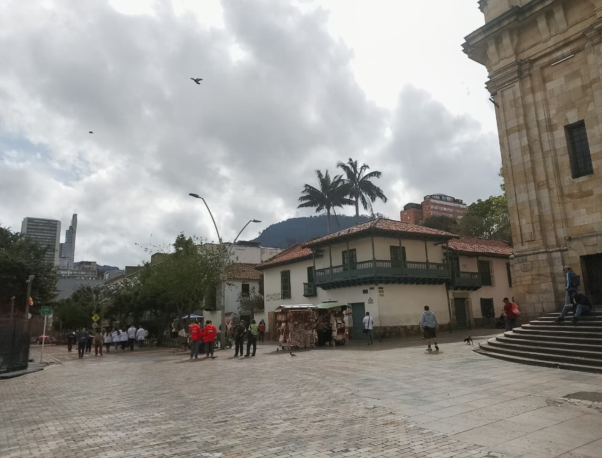

Mapa Interactivo
📍 Recorrido Vial
Detalle de la Parada

▶ Reproducir Clip
1 Plaza de Bolívar
Eje político, social y cultural del país. Rodeada por la Catedral Primada, el Capitolio y el Palacio de Justicia; epicentro de históricas filmaciones y de la memoria nacional.
💡 La estatua de Simón Bolívar que preside la plaza, obra del escultor italiano Pietro Tenerani, fue inaugurada en 1846 y es considerada el primer monumento público de Bogotá.
🎬 Clips Audiovisuales en esta Parada:
3
🎬 Videoclips, Cine y Ficción en Bogotá
Cine & Música en La Candelaria
Explora los videoclips musicales legendarios, superproducciones de Hollywood y series internacionales grabadas en los mismos escenarios coloniales y plazoletas de nuestro recorrido patrimonial.
📷 Galería del Recorrido
💬 Opiniones y Comentarios
Cargando comentarios...